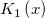

| Date |
Gibt den Wert der Julianischen Tageszahl wieder, den Origin intern zum Darstellen des Datums verwendet. |
| Day |
Gibt die Tageszahl eines gegebenen Datums wieder. |
| Hour |
Gibt die Stunde als eine ganze Zahl zwischen 0 (12:00 A.M.) und 23 (11:00 P.M.) wieder. |
| Minute |
Gibt die Minuten als eine ganze Zahl zwischen 0 und 59 wieder. |
| Month |
Gibt den Monat als eine ganze Zahl zwischen 1 (Januar) und 12 (Dezember) wieder. |
| MonthName |
Gibt den Monatsnamen für einen festgelegten Monat nach einem Index von 1 bis 12 oder als einen Datumswert wieder. |
| Now |
Gibt das aktuelle Datum als einen Datumswert (Julianische Tage) wieder. |
| Quarter |
Gibt 1,2,3,4 mit Datumsargument wieder. |
| Second |
Gibt die Sekunden als einen realen Wert im Bereich zwischen 0 (Null) und 59.9999... wieder. |
| Time |
Gibt den Wert der Julianischen Tageszahl wieder, den Origin intern zum Darstellen des Datums verwendet. |
| Today |
Gibt das aktuelle Datum als einen Datumswert (Julianische Tage) wieder. |
| WeekDay |
Gibt 1,2,3 etc. für den Tag der Woche wieder. |
| WeekNum |
Gibt eine Zahl zwischen 1 und 53 wieder und gibt damit die Zahl der Kalenderwoche eines Jahres an. |
| Year |
Gibt das Jahr als ganze Zahl im Bereich 0100-9999 wieder. |
| YearName |
Gibt das Jahr in Zeichenkettenform mit Eingabe des Jahres oder Datums wieder, mit Option n. |
| Char |
Gibt das durch den Nummercode festgelegte Zeichen aus. |
| Code |
Gibt einen numerischen Code für das erste Zeichen in der Eingabezeichenkette aus. |
| Compare |
Um str1 mit str2 zu vergleichen, werden identische Zeichenketten mit 1 ausgegeben. |
| Exact |
Gibt TRUE (WAHR) aus, wenn beide Zeichenketten genau übereinstimmen (Fall und Länge). |
| Find |
Gibt den Speicherort einer Unterzeichenkette (Substring - str2) in einer Zeichenkette (str1) aus. Die Suche berücksichtigt Groß- und Kleinschreibung. Um eine Suche durchzuführen, die Groß- und Kleinschreibung nicht berücksichtigt, verwenden Sie die Funktion Search. |
| Format |
Konvertiert double mit Hilfe der LabTalk-Formatierungsoption in string. Standardmäßig verwendet die Formatierungsoption "*" @SD significant digits; "*3" wird als 3 signifikante Stellen gezeigt. |
| Left |
Gibt die am weitesten links stehenden n Zeichen aus. |
| Len |
Gibt die Länge einer Zeichenkette aus. |
| Lower |
Konvertiert in Kleinbuchstaben. |
| MatchBegin |
Gibt die erste Position einer Unterzeichenkette in einer Zeichenkette string(str1) aus, indem ein Zeichenkettenmuster string pattern(str2) verwendet wird, das Platzhalterzeichen wie * or ? enthält. |
| MatchEnd |
Gibt die letzte Position einer Unterzeichenkette in einer Zeichenkette string(str1) aus, indem ein Zeichenkettenmuster string pattern(str2) verwendet wird, das Platzhalterzeichen wie * or ? enthält. |
| Mid |
Gibt n2 Zeichen der Zeichenkette aus, angefangen bei der n1-ten Position (Nummerierung beginnt bei 1). |
| Replace |
Ersetzt n2 Zeichen in string1, angefangen bei der n1-ten Position mit string2. String2 kann eine andere Länge haben als n2. |
| Right |
Gibt die am weitesten rechts stehenden n Zeichen aus. |
| Search |
Gibt die Position einer Unterzeichenkette substring(str2) in einer Zeichenkette string(str1) aus. Die Suche berücksichtigt NICHT die Groß- und Kleinschreibung. Um eine Suche durchzuführen, die Groß- und Kleinschreibung berücksichtigt, verwenden Sie die Funktion Find. |
| Substitute |
Ersetzt string3 mit string2, wenn sie in string1 gefunden wird. n=0 Ersetzt alles, ansonsten nur n-te Instanz. |
| Trim |
Kürzt Leerzeichen aus Zeichenketten, Optionen eingeschlossen. |
| Upper |
Konvertiert in Großbuchstaben. |
| Ave |
Unterteilt den Datensatz in Größengruppen size, sucht den Durchschnitt für jede Gruppe und gibt einen Bereich, der diese Werte enthält, aus. |
| Count |
Zählt die Elemente in einem Vektor. |
| Cov |
Gibt die Kovarianz zwischen zwei Datensätzen aus. |
| Diff |
Gibt einen Datensatz aus, der die Differenz zwischen benachbarten Elementen im dataset beinhaltet. |
| Histogram |
Erzeugt Dateneinteilungen aus dem dataset in dem festgelegten Bereich von min bis max. Die Einteilungsbreite ist gleich inc. |
| Max |
Gibt das Maximum eines Vektors aus. |
| Mean |
Gibt das Mittel eines Vektors aus. |
| Median |
Gibt den Median von vdData mit nInterpolation aus. |
| Min |
Gibt das Minimum eines Vektors aus. |
| Percentile |
Gibt einen Bereich aus, der aus Perzentilwerten für dataset1 bei jedem in dataset2 festgelegten Prozentwert besteht. |
| QCD2 |
Gibt einen Faktor (Quality Control D2 Factor) aus, der die Standardabweichung einer Hauptverteilung (oder Grundgesamtheit) aus einer durchschnittlichen Spannweite schätzt, wenn der Stichprobenumfang (oder Teilgruppenumfang) n gegeben ist. |
| QCD3 |
Gibt einen Faktor (Quality Control D3 Factor) aus, der die untere 3-Sigma-Kontrollgrenze für R-Diagramme (Bereich der Stichprobendiagramme) aus einem durchschnittlichen Bereich bestimmt, wenn der Stichprobenumfang (oder Teilgruppenumfang) n gegeben ist. |
| QCD4 |
Gibt einen Faktor (Quality Control D4 Factor) aus, der die obere 3-Sigma-Kontrollgrenze für R-Diagramme (Bereich der Stichprobendiagramm) aus einem durchschnittlichen Bereich bestimmt, wenn der Stichprobenumfang (oder Teilgruppenumfang) n gegeben ist. |
| Ss |
Nimmt den Mittelwert der Daten als Referenzwert an. |
| StdDev |
Die Standardabweichung der Stichprobe |
| StdDevP |
Die Standardabweichung der Stichprobe |
| Sum |
Gibt einen Bereich aus, dessen i-tes Element die Summe des ersten i-Elements des Datensatzes ist. |
| Total |
Gibt die Summe eines Vektors aus. |
| Betacdf |
Berechnet die kumulative Beta-Verteilungsfunktion bei  mit den Parametern mit den Parametern  und und  . . |
| Binocdf |
Berechnet die untere, obere und Punktwahrscheinlichkeit bei einem gegebenen Wert  , verbunden mit einer Binomialverteilung mit Hilfe der entsprechenden Parameter , verbunden mit einer Binomialverteilung mit Hilfe der entsprechenden Parameter  , ,  . . |
| Bivarnormcdf |
Berechnet die untere Wahrscheinlichkeit für die bivariate Normalverteilung. |
| Chi2cdf |
Berechnet die untere Wahrscheinlichkeit für die  -Verteilung mit realen Freiheitsgraden. -Verteilung mit realen Freiheitsgraden. |
| Fcdf |
Berechnet die kumulative Verteilungsfunktion  bei mit den Parametern und bei mit den Parametern und  und die untere Wahrscheinlichkeit. und die untere Wahrscheinlichkeit. |
| Gamcdf |
Berechnet die untere Wahrscheinlichkeit für die Gamma-Verteilung mit realen Freiheitsgraden mit den Parametern  und und  . . |
| Hygecdf |
Berechnet die unteren Wahrscheinlichkeiten bei einem gegebenen Wert, verbunden mit einer hypergeometrischen Verteilung mit Hilfe der entsprechenden Parameter in ,nand . |
| Ncbetacdf |
Berechnet die cdf mit unterer Wahrscheinlichkeit der nicht-zentralen Beta-Verteilung. |
| Ncchi2cdf |
Berechnet die Wahrscheinlichkeit, die mit der unteren Wahrscheinlichkeit der nicht-zentralen -Verteilung verbunden ist. |
| Ncfcdf |
Berechnet die Wahrscheinlichkeit, die mit der unteren Wahrscheinlichkeit der nicht-zentralen  oder der Varianz-Verhältnis-Verteilung verbunden ist. oder der Varianz-Verhältnis-Verteilung verbunden ist. |
| Normcdf |
Berechnet die untere Wahrscheinlichkeit für die Standardverteilung. |
| Poisscdf |
Berechnet die unteren Wahrscheinlichkeiten bei einem gegebenen Wert , verbunden mit einer Poisson-Verteilung mit Hilfe der entsprechenden Parameter in  . . |
| Srangecdf |
Berechnet die Wahrscheinlichkeit, die mit dem unteren Ende der Verteilung der studentisierten Bereichsstatistik verbunden ist. |
| Tcdf |
Berechnet die kumulative Verteilungsfunktion der studentisierten t-Verteilung. |
| Wblcdf |
Berechnet die untere Wahrscheinlichkeit der kumulativen Weibull-Verteilungsfunktion für den Wert mit Hilfe der Parameter und . |
| Betapdf |
Gibt die Funktion der Wahrscheinlichkeitsdichte der Beta-Verteilung mit den Parametern a and b aus. |
| Binopdf |
Gibt die Funktion der Wahrscheinlichkeitsdichte der Binomialverteilung mit den Parametern n, p aus. |
| Cauchypdf |
Gibt die PDF der Cauchy-Verteilung mit Lageparameter a und Skalenparameter b aus, ausgewertet bei den Werten in X. |
| Exppdf |
Gibt die Funktion der Wahrscheinlichkeitsdichte der Exponentialverteilung mit Mittelwertparameter Lambda aus, ausgewertet bei den Werten in X. |
| Gampdf |
Berechnet die Gamma-Funktion der Wahrscheinlichkeitsdichte bei jedem der Werte in X mit Hilfe der entsprechenden Formparameter in a und Skalenparameter in b. |
| Ks2density |
Gibt die 2D-Kerneldichte bei Punkt (x,y) in Bezug zu einer Funktion mit Hilfe der Skala (wx,wy) aus. |
| Ksdensity |
Gibt die Kerneldichte bei x für einen gegebenen Vektor vX mit einer Bandbreite w aus. |
| Lappdf |
Gibt die Funktion der Wahrscheinlichkeitsdichte der Laplace-Verteilung mit Lageparameter a und Skalenparameter b aus, ausgewertet bei den Werten in X. |
| Lognpdf |
Gibt die Werte bei X der Lognormal-Funktion der Wahrscheinlichkeitsdichte mit Verteilungsparametern Mu und Sigma aus. |
| Normpdf |
Gibt die Funktion der Wahrscheinlichkeitsdichte bei jedem der Werte in X mit Hilfe der Normalverteilung mit Mittelwert Mu und Standardabweichung Sigma aus. |
| Poisspdf |
Gibt die Poisson-Funktion der Wahrscheinlichkeitsdichte bei jedem der Werte in X mit Hilfe der Mittelwertparameter in Lambda aus. |
| Wblpdf |
Gibt die Funktion der Wahrscheinlichkeitsdichte der Weibull-Verteilung mit den Parametern a and b aus. |
| abs |
Gibt den absoluten Wert einer Zahl aus. |
| acos |
Gibt die den Arkuskosinus einer Zahl aus. Das Ergebnis wird in Bogenmaß angegeben. |
| Acosh |
Gibt den inversen hyperbolischen Kosinus aus. |
| Angle |
Gibt den Winkel in Radiant aus. |
| Asin |
Gibt die Inverse der entsprechenden trigonometrischen Funktion aus. |
| Asinh |
Gibt den inversen hyperbolischen Sinus aus. |
| Atan |
Gibt die Inverse der entsprechenden trigonometrischen Funktion aus. |
| Atanh |
Gibt den inversen hyperbolischen Tangens aus. |
| Beta |
Die Beta-Funktion hat die folgenden Form: beta(a, b). |
| Cos |
Gibt den Wert von Kosinus für jeden Wert des gegebenen x aus. |
| Cosh |
Die Funktion cosh(x) ist die hyperbolische Form von cos(x). |
| Degrees |
Konvertiert den Radiant in Grad. |
| Exp |
Gibt den exponentiellen Wert von x aus. |
| Incbeta |
Unvollständige Beta-Funktion |
| incf |
Unvollständige F-Tabellenfunktion |
| Int |
Gibt die abgeschnittene ganze Zahl von x aus. Beispielsweise int(7,9) = 7. |
| Inverf |
Berechnet die inverse Fehlerfunktion fnction bei x. |
| J0 |
Bessel-Funktion 0-ter Ordnung |
| J1 |
Bessel-Funktion 1. Ordnung |
| Jn |
Bessel-Funktion n-ter Ordnung (wobei n eine ganze Zahl ist) |
| Ln |
Gibt den natürlichen Logarithmus für den Wert x aus. |
| Log |
Gibt den Logarithmus zur Basis 10 des Werts von x aus. |
| Mod |
Gibt den Rest der Division der ganzen Zahl x geteilt durch die ganze Zahl y aus. |
| Nint |
Der zurückgegebene Wert der Funktion nint(x) ist identisch mit round(x, 0). |
| Prec |
Gibt einen Wert (oder einen Datensatz) aus, so dass die Zahlen p Signifikanzstellen enthalten. |
| Rmod |
Gibt den realen Rest der Division der realen Zahl x geteilt durch die reale Zahl y aus. |
| Round |
Gibt einen Wert (oder einen Datensatz) mit p Dezimalstellen der Genauigkeit aus. |
| Sin |
Gibt den Wert von Sinus für jeden Wert des gegebenen x aus. |
| Sinh |
Die Funktion sinh(x) ist die hyperbolische Form von sin(x). |
| Sqrt |
Die Funktion sqrt(x) gibt die Quadratwurzel von x aus. |
| Tan |
Gibt den Wert von Tangens für jeden Wert des gegebenen x aus. |
| Tanh |
Die Funktion tanh(x) ist die hyperbolische Form von tan(x). |
| Y0 |
Bessel-Funktion 0-ter Ordnung und 2. Art |
| Y1 |
Bessel-Funktion 1. Ordnung und 2. Art |
| Yn |
Bessel-Funktion der 2. Art |
| Radians |
Konvertiert Grad in Radiant. |
| Distance |
Gibt den Abstand zwischen zwei Punkten aus. |
| Distance3D |
Gibt den Abstand zwischen zwei Punkten in 3D aus. |
| Angleint1 |
Gibt den Winkel mit einer Linie aus, die durch zwei Punkte (x1, y1) und (x2, y2) mit X-Achse geht. Gibt eine Gradangabe aus, wenn Einheit=1, oder Radiant, wenn Einheit=0. Standard ist Radiant. |
| Angleint2 |
Gibt Winkel zwischen zwei Linien aus. Gibt eine Gradangabe aus, wenn Einheit=1, oder Radiant, wenn Einheit=0. Standard ist Radiant. |
| Data |
Erstellt einen Datensatz mit einem Startwert x1, einem Endwert x2 und einem Inkrement gleich inc. |
| Errof |
Gibt den Datensatz (Fehlerspalte), der die Fehlerwerte des dataset enthält, aus. |
| FindMasks |
Gibt einen Datensatz aus, der die Indizes der maskierten Datenpunkte enthält. |
| Grnd |
Gibt einen Wert aus einer normalverteilten (Gaussian) Stichprobe aus, inklusive Nullmittelwert und Standardabweichung der Einheit. |
| Normal |
Gibt einen Bereich mit npts Anzahl von Werten aus. |
| Peaks |
Gibt einen Datensatz aus, der Indizes von Impulsen enthält, die mi Hilfe der Kriterien Breite und Mindesthöhe gefunden wurden. |
| Poisson |
Gibt die npts Anzahl der zufälligen ganzen Zahlen aus, die eine Poisson-Verteilung mit dem Mittelwert mean haben. mean.seed ist optional. |
| ran |
Gibt einen Wert zwischen 0 und 1 aus einer gleichverteilten Stichprobe aus. |
| Rnd |
Gibt einen Wert zwischen 0 und 1 aus einer gleichverteilten Stichprobe aus. |
| TReplace |
Gibt einen Datensatz aus. |
| Uniform |
Gibt einen Bereich mit npts Anzahl von Werten aus. |
| Xof |
Gibt eine Zeichenkette aus, die die X-Werte des dataset enthält. |
| Airy_ai |
Wertet eine Approximation an die Airy Funktion Ai(x) aus. |
| Airy_ai_deriv |
Wertet eine Approximation der Ableitung der Airy Funktion Ai(x) aus. Sie basiert auf einigen Chebyshev-Erweiterungen. |
| Airy_bi |
Wertet eine Approximation an die Airy Funktion Bi(x) aus. |
| Airy_bi_deriv |
Wertet eine Approximation der Ableitung der Airy Funktion Bi(x) aus. Sie basiert auf einigen Chebyshev-Erweiterungen. |
| Bessel_i_nu |
Wertet eine Approximation an die modifizierte Bessel-Funktion der ersten Art I /4 (x), wobei die Ordnung v=-3, -2, -1, 1, 2 oder 3 und die X-Achse real und positiv ist. /4 (x), wobei die Ordnung v=-3, -2, -1, 1, 2 oder 3 und die X-Achse real und positiv ist. |
| Bessel_i_nu_scaled |
Wertet eine Approximation an die modifizierte Bessel-Funktion der ersten Art I") /4 (x) aus, wobei die Ordnung =-3, -2, -1, 1, 2 oder 3 und x real und positiv ist. /4 (x) aus, wobei die Ordnung =-3, -2, -1, 1, 2 oder 3 und x real und positiv ist. |
| Bessel_i0 |
Wertet eine Approximation an die modifizierte Bessel-Funktion der ersten Art I0(x) aus. |
| Bessel_i0_scaled |
Wertet eine Approximation an ") aus, wobei IO eine modifizierte Bessel-Funktion der ersten Art ist. aus, wobei IO eine modifizierte Bessel-Funktion der ersten Art ist. |
| Bessel_i1 |
Wertet eine Approximation an die modifizierte Bessel-Funktion der ersten Art ") aus. aus. |
| Bessel_i1_scaled |
Wertet eine Approximation an ") aus, wobei eine modifizierte Bessel-Funktion der ersten Art ist. aus, wobei eine modifizierte Bessel-Funktion der ersten Art ist. |
| Bessel_j0 |
Wertet die Bessel-Funktion der ersten Art ") aus. aus. |
| Bessel_j1 |
Wertet eine Approximation an die modifizierte Bessel-Funktion der ersten Art ") aus. aus. |
| Bessel_k_nu |
Wertet eine Approximation an die modifizierte Bessel-Funktion der zweiten ArtI") aus, wobei die Ordnung =-3, -2, -1, 1, 2 oder 3 und x real und positiv ist. aus, wobei die Ordnung =-3, -2, -1, 1, 2 oder 3 und x real und positiv ist. |
| Bessel_k_nu_scaled |
Wertet eine Approximation an die modifizierte Bessel-Funktion der zweiten Art ") aus, wobei die Ordnung =-3, -2, -1, 1, 2 oder 3 und x real und positiv ist. aus, wobei die Ordnung =-3, -2, -1, 1, 2 oder 3 und x real und positiv ist. |
| Bessel_k0 |
Wertet eine Approximation an die modifizierte Bessel-Funktion der zweiten Art ") aus. aus. |
| Bessel_k0_scaled |
Wertet eine Approximation an ") aus, wobei aus, wobei  eine modifizierte Bessel-Funktion der zweiten Art ist. eine modifizierte Bessel-Funktion der zweiten Art ist. |
| Bessel_k1 |
Wertet eine Approximation an die modifizierte Bessel-Funktion der zweiten Art  aus. |
| Bessel_k1_scaled |
Wertet eine Approximation an ") aus, wobei aus, wobei  eine modifizierte Bessel-Funktion der zweiten Art ist. eine modifizierte Bessel-Funktion der zweiten Art ist. |
| Bessel_y0 |
Wertet die Bessel-Funktion der zweiten Art Y0 aus. |
| Bessel_y1 |
Wertet die Bessel-Funktion der zweiten Art Y1 aus. |
| Cos_integral |
Wertet ") aus. aus. |
| Cumul_normal |
Wertet die kumulative Normalverteilungsfunktion aus. |
| Cumul_normal_complem |
Wertet einen Näherungswert für das Komplement der kumulativen Normalverteilungsfunktion aus. |
| Elliptic_integral_rc |
Berechnet einen Näherungswert für das Integral, wobei x ≥ 0 und y ≠ 0 ist. |
| Elliptic_integral_rd |
Berechnet einen Näherungswert für das Integral, wobei x, y ≥ 0, mindestens x oder y Null ist und z > 0. |
| Elliptic_integral_rf |
Berechnet eine Approximation an das Integral, wobei x, y, z ≥ 0 und mindestens x, y oder z Null ist. |
| Elliptic_integral_rj |
Berechnet eine Approximation an das Integral, wobei x,y,z ≥ 0, ≠ 0 und mindestens x, y oder z Null ist. |
| Erf |
Berechnet die Fehlerfunktion (oder das Fehlerintegral der Normalverteilung). |
| Erfc |
Berechnet einen Näherungswert für das Komplement der Fehlerfunktion. |
| erfcinv |
Berechnet den Wert der inversen komplementären Fehlerfunktion für das festgelegte y. |
| erfcx |
Berechnet die skalierte komplementäre Fehlerfunktion. |
| erfinv |
Berechnet die inverse Fehlerfunktion. |
| Exp_integral |
Wertet aus. |
| Fresnel_c |
Wertet eine Approximation an das Fresnel-Integral aus. |
| Fresnel_s |
Wertet eine Approximation an das Fresnel-Integral aus, das auf Chebyshev-Erweiterungen basiert. |
| Gamma |
Wertet aus. |
| Incomplete_gamma |
Wertet die unvollständigen Gamma-Funktionen der normierten Form aus. |
| jacobian_theta |
Berechnet den Wert von einer der jacobischen Thetafunktionen. |
| Kelvin_bei |
Wertet eine Approximation an die Kelvin-Funktion bei x aus. |
| Kelvin_ber |
Wertet eine Approximation an die Kelvin-Funktion ber x aus. |
| Kelvin_kei |
Wertet eine Approximation an die Kelvin-Funktion kei x aus. |
| Kelvin_ker |
Wertet eine Approximation an die Kelvin-Funktion ker x aus. |
| Log_gamma |
Wertet ") .x > 0 aus, das auf Chebyshev-Erweiterungen basiert. .x > 0 aus, das auf Chebyshev-Erweiterungen basiert. |
| Real_polygamma |
Wertet eine Approximation an die k-te Ableitung der psi-Funktion ψ(x) aus. |
| Sin_integral |
Wertet Si = sin_integral(x) aus. |
 mit Parametern, die durch
mit Parametern, die durch  mit den Parametern
mit den Parametern  und
und  .
. mit den Parametern
mit den Parametern